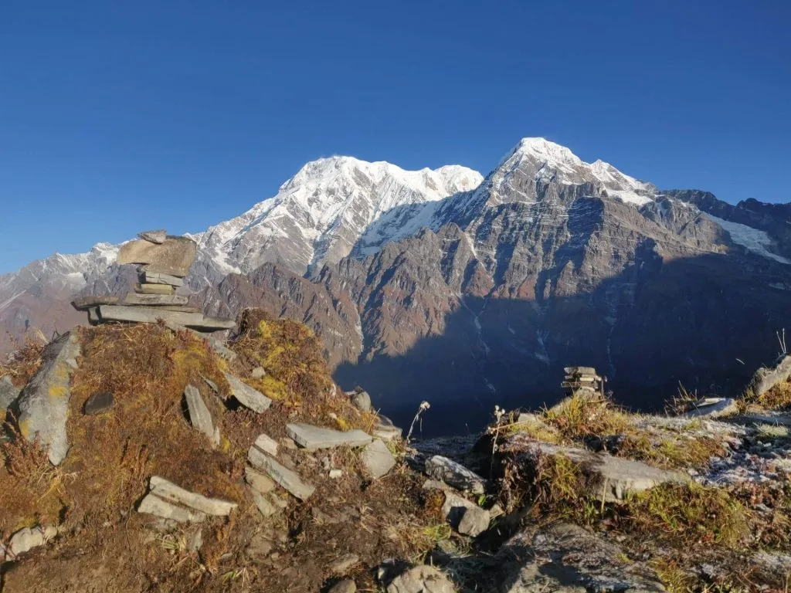
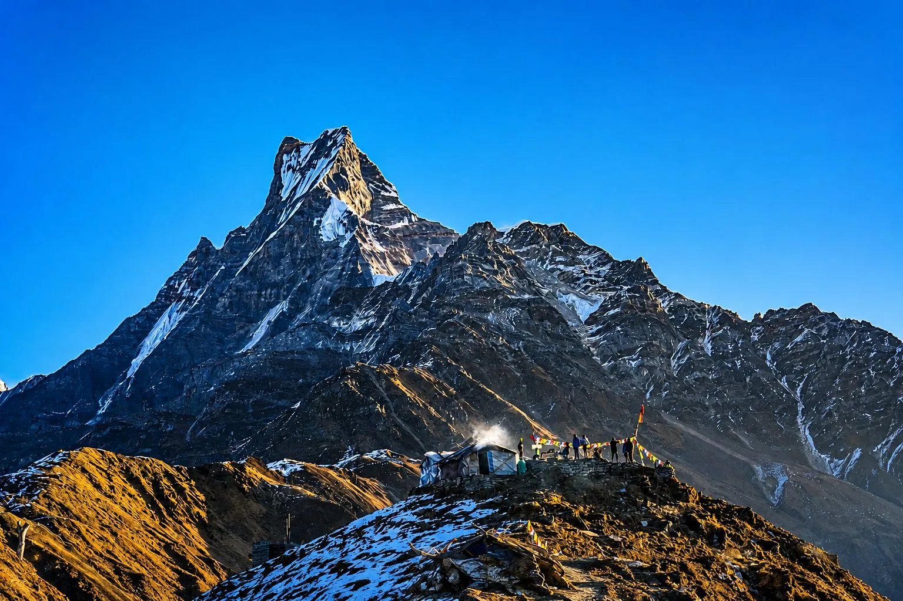

Our ABC With Mardi Himal Trek (13 Days) with Igloo Himalaya Treks went beyond every expectation we had. What first pulled us towards them was their strict safety protocol and personal care. From start to finish, Sagar and our expert team made sure our ABC With Mardi Himal Trek was comfortable, safe, and well acclimatized every single day!
Annapurna Region • Sanctuary & Mardi Himal Ridge
Combined Trek
5.0
reviews on TripAdvisor
5.0
169 reviews on Google
ABC With Mardi Himal Trek (13 Days)
Walk into the Annapurna Sanctuary, then climb the Mardi Himal ridge on our 13-day ABC With Mardi Himal Trek. You spend a night at Annapurna Base Camp before returning through Bamboo to Jhinu Danda. The second section leads through Rest Camp and High Camp to the upper viewpoint, with Machhapuchhre above the ridge in clear weather. Forest trails, village steps and open mountain paths give the journey variety, with two ascents requiring preparation and a steady pace.

Travelers' Choice
Best of the Best 2026




Key Trip Facts
Duration
13 days
9 walking days, road &
transfers
Difficulty
Moderate to
challenging
Long days & two mountain
ascents
Max
Altitude
Approx. 4,200 m (13,779 ft)
Mardi Himal Upper Viewpoint
Destination
Nepal
Annapurna Conservation Area
Activity
Trekking
Mountain Sanctuary & Ridge
Accommodation
3-Star Hotels &
Teahouses
Kathmandu/Pokhara + Mountain
Lodges
Transport
Tourist Buses &
Private 4WD
KTM-PKR buses, Jhinu & Siding
transfers
Meals
City Breakfasts &
Trek Meals
All meals & tea/coffee while
trekking
Recommended
Season
Spring &
Autumn
Mar–May & Sep–Nov
Trek
Starts
Jhinu Danda
After the drive from Pokhara
Trek
Ends
Siding
Followed by a drive to Pokhara
Trek
Region
Annapurna
Central Himalaya, Nepal
Package
Start Point
Kathmandu
Tribhuvan Int'l Airport
Package
End Point
Kathmandu
Airport departure transfer
Trek Overview
Our 13-day ABC With Mardi Himal Trek combines the Annapurna Sanctuary with the forested hills and open ridge of Mardi Himal. You reach Annapurna Base Camp at 4,130 m, return through Bamboo and Jhinu Danda, then climb towards High Camp and the upper viewpoint. The route gives you two different mountain approaches within one journey.
The first section begins after travelling from Kathmandu to Pokhara and driving to Jhinu Danda. Village steps lead towards Chhomrong and Sinuwa, where the path joins the Modi Khola valley. You continue through Bamboo, Dovan and Himalaya before reaching Deurali. Beyond the forest, the route passes Machhapuchhre Base Camp and enters the Annapurna Sanctuary, where Annapurna I, Annapurna South and Hiunchuli rise around the end of the valley.
After a night at Annapurna Base Camp, you descend through the same valley to Bamboo and Jhinu Danda. The connecting stage then leads towards Rest Camp on the Mardi Himal route. From here, the landscape gradually opens as you climb towards High Camp, with Machhapuchhre becoming more visible above the forest and along the ridge.
The Mardi Himal Upper Viewpoint at around 4,200 m is the highest point. You visit it from High Camp before descending to Badal Danda, then finish the trekking section through Siding. This second ascent adds variety and effort after the base camp journey. Prepare for consecutive walking days, steep steps and mountain nights, with flexibility when weather affects the trail.
You stay in teahouses during the mountain stages and hotels in Kathmandu and Pokhara. The programme includes both trekking sections, road transfers and time for arrival and departure.
Key Route Highlights & Destinations
Annapurna Base Camp (4,130 m)
Jhinu Danda Hot Springs
Mardi Himal High Camp (3,540 m)
Upper Viewpoint (4,200 m)
Badal Danda (3,300 m)
Machhapuchhre Base Camp (3,700 m)
Two Mountain Ascents
Sanctuary & Ridge Panorama
Intimate Fishtail Views
Combined 13-Day Itinerary
Want to know more about this trek?
Chat with us — real trekking experts, not bots.
Replies within 6–7 hours
ABC With Mardi Himal Trek Highlights
Reach Annapurna Base Camp at 4,130 m, staying overnight in the sanctuary with Annapurna I,
Annapurna South and Hiunchuli above the valley.
Hike to the Mardi Himal Upper Viewpoint, with close views of Machhapuchhre when the weather
allows.
Experience both the enclosed Annapurna Sanctuary and Mardi Himal’s open ridge, linked within one
continuous trekking journey.
Stay at Jhinu Danda, known for its natural hot springs beside the Modi Khola.
Follow forest trails through Sinuwa, Bamboo and Deurali before reaching the higher slopes of the
sanctuary.
Descend from the Mardi ridge through Badal Danda and Siding, finishing the walking route before
travelling to Pokhara by road.
Why Book the ABC With Mardi Himal Trek with Igloo Himalaya Treks?
We help you prepare in Kathmandu and support both Annapurna trekking sections. The package includes the following arrangements and equipment.
Trek Briefing and Gear Check
Before leaving Kathmandu, we explain the route, walking schedule and equipment needs. Your briefing gives you time to discuss altitude, accommodation and meals before beginning the journey to Pokhara.
Guide and Porter Support
Your package includes a licensed, English-speaking guide and one porter for every two trekkers. The guide leads both sections, while the porter carries your luggage. You carry a daypack with essentials.
Equipment Provided for the Trek
We provide a sleeping bag, down jacket and duffel bag for the trek. Check the gear during your briefing and bring your boots, clothing and personal items suitable for the conditions.
Communication When Plans Change
Rain, snow and road conditions can affect the programme. Our team keeps you informed, explains available options and discusses changes, including additional accommodation or transport costs when weather alters the travel arrangements.
100% Guaranteed Departures
Every date on our calendar runs, with no minimum group size required. If you book a solo private trek, it still runs as a solo private trek. We don’t cancel you off a date because numbers didn't work out.
Private Airport Transfers Included
A driver with a name card of Igloo Himalaya Treks meets you at Tribhuvan International Airport, takes you to your hotel, and the same arrangement gets you back at the end.
Day 1: Arrival in Kathmandu
Tribhuvan International Airport – 1,400 m – Arrival transfer & trip briefing
Main Activity: Arrival, airport transfer and trip briefing
Overnight: 3-star hotel in Kathmandu (around 1,400 m)
Meals: Breakfast
Welcome to Nepal. Our representative meets you at Tribhuvan International Airport and transfers you to your hotel in Kathmandu. After checking in, we discuss the route, equipment and walking schedule so you can prepare for the journey.
Depending on your arrival time, you can walk around Thamel or rest after your flight. Use the time to organise your belongings and discuss any equipment, health or dietary questions before departure.
Day 2: Kathmandu to Pokhara
Kathmandu to Pokhara – 820 m – Tourist bus drive (7–8 hrs)
Main Activity: Tourist bus journey from Kathmandu to Pokhara
Driving Time: Approx. 7–8 hours, depending on road conditions
Overnight: 3-star hotel in Pokhara (around 820 m)
Meals: Breakfast
After breakfast, we leave Kathmandu by tourist bus and travel towards Pokhara. The road follows river valleys through the middle hills, passing towns and farmland before reaching the lakeside city.
Traffic, roadworks and weather can affect the journey, so keep medicines and essentials in your daypack. After reaching Pokhara, check into your hotel and rest before the trekking begins. If time allows, take a walk beside Phewa Lake, with views towards Machhapuchhre in clear weather. Tomorrow’s journey brings you to Jhinu Danda and the trail.
Day 3: Pokhara to Jhinu Danda and Trek to Sinuwa
Jhinu Danda to Sinuwa – 2,280 m – 4–5 hrs trek + drive
Main Activity: Private drive to Jhinu Danda, then trek to Sinuwa
Walking Time: Approx. 4–5 hours, plus the road drive
Walking Route: Jhinu Danda–Chhomrong–Sinuwa
Overnight: Teahouse in Sinuwa (around 2,280 m)
Meals: Breakfast, lunch and dinner
We drive from Pokhara towards Jhinu Danda, where the walking begins. The trail climbs towards Chhomrong before descending to the Chhomrong Khola and continuing uphill again towards Sinuwa.
Stone steps connect the village paths, with terraced hillsides and forest around the route. Today includes repeated climbs and descents, so choose a pace you can maintain all day. On arrival at Sinuwa, settle into your teahouse and organise your gear for tomorrow’s longer stage. Your guide explains the onward route through the Modi Khola valley.
Day 4: Sinuwa to Deurali
Sinuwa to Deurali – 3,210 m – 7–8 hrs trek
Walking Time: Approximately 7–8 hours
Walking Route: Sinuwa–Bamboo–Dovan–Himalaya–Deurali
Overnight: Teahouse in Deurali (around 3,210 m)
Meals: Breakfast, lunch and dinner
Leaving Sinuwa, we continue through the forest towards Bamboo and Dovan. The trail follows the Modi Khola valley, passing teahouses and sections of stone steps. Beyond Himalaya, we climb towards Deurali beneath steep slopes.
The forest gradually gives way to lower vegetation as the valley opens towards the sanctuary. Today brings a substantial gain in sleeping altitude. Keep a steady pace, take breaks and tell your guide about headaches, nausea or unusual fatigue before settling in.
Day 5: Deurali to Annapurna Base Camp
Deurali to ABC via MBC – 4,130 m – 4–5 hrs trek
Walking Time: Approximately 4–5 hours
Main Approach: Via Machhapuchhre Base Camp (approx. 3,700 m)
Highest & Overnight Altitude: Annapurna Base Camp, approx. 4,130 m
Overnight: Teahouse at Annapurna Base Camp
Meals: Breakfast, lunch and dinner
We leave Deurali and climb through the upper Modi Khola valley towards Machhapuchhre Base Camp. The path moves beyond the forest into more open mountain terrain beneath the slopes.
Beyond Machhapuchhre Base Camp at around 3,700 m, we continue towards Annapurna Base Camp. In clear weather, Annapurna I, Annapurna South and Hiunchuli rise around the valley. The increasing altitude makes gentler stretches feel more demanding.
At base camp, check into your teahouse and rest. We stay overnight in the sanctuary. Keep warm layers accessible and report any symptoms promptly to your guide.
Day 6: Annapurna Base Camp to Bamboo
ABC to Bamboo – 2,310 m – 7–8 hrs descent
Walking Time: Approximately 7–8 hours
Walking Route: ABC–Machhapuchhre Base Camp–Deurali–Bamboo
Overnight: Teahouse in Bamboo (around 2,310 m)
Meals: Breakfast, lunch and dinner
If skies are clear, the morning gives you another view of the mountains around Annapurna Base Camp. After breakfast, we retrace the valley trail through Machhapuchhre Base Camp and Deurali before continuing down towards Bamboo.
Trees return as the trail passes Himalaya and Dovan, with forest replacing the open slopes around base camp. The long descent includes stone steps and remains demanding on your legs. Use poles if helpful and take breaks before settling into your teahouse in Bamboo.
Day 7: Bamboo to Jhinu Danda
Bamboo to Jhinu Danda – 1,780 m – 6–7 hrs trek
Walking Time: Approximately 6–7 hours
Walking Route: Bamboo–Sinuwa–Chhomrong–Jhinu Danda
Overnight: Teahouse in Jhinu Danda (around 1,780 m)
Meals: Breakfast, lunch and dinner
We leave Bamboo and continue along the forest trail towards Sinuwa. The trail then descends to the Chhomrong Khola before climbing the stone steps into Chhomrong. From the village, another descent leads towards Jhinu Danda.
This day includes an uphill section despite the lower overnight altitude. After reaching Jhinu, rest at the teahouse. If time and local conditions allow, discuss a visit to the nearby hot springs beside the Modi Khola before tomorrow’s connecting stage.
Day 8: Jhinu Danda to Rest Camp
Jhinu Danda to Rest Camp – 2,605 m – Connecting trek to Mardi route
Main Activity: Connecting trek from ABC trail to Mardi Himal route
Walking Time: Allow a full trekking day; timing depends on connecting trail
Overnight: Teahouse at Rest Camp (around 2,605 m)
Meals: Breakfast, lunch and dinner
We leave Jhinu Danda and begin the connection towards the Mardi Himal route. The day follows village paths and forest trails, with a sustained uphill approach towards Rest Camp after leaving the lower valley and the ABC trail.
The connecting trail and lodge location affect the day’s walking time, so allow a full trekking day and follow your guide’s plan. At Rest Camp, settle into the teahouse and prepare warm clothing for tomorrow’s climb towards the higher ridge.
Day 9: Rest Camp to High Camp
Rest Camp to High Camp – 3,540 m – 4–5 hrs climb
Walking Time: Approx. 4–5 hours; allow flexibility for climb
Walking Route: Rest Camp–Low Camp–Badal Danda–High Camp
Overnight: Teahouse at High Camp (around 3,540 m)
Meals: Breakfast, lunch and dinner
From Rest Camp, we continue uphill towards the Mardi Himal ridge. Forest paths lead towards Low Camp before the route opens around Badal Danda and continues towards High Camp.
In clear weather, Machhapuchhre, Annapurna South and Hiunchuli become visible as trees give way to open slopes. High Camp is the highest overnight stop on the Mardi section. Today brings a substantial gain in sleeping altitude, so keep your pace steady and report symptoms before preparing for tomorrow’s viewpoint hike.
Day 10: High Camp to Mardi Himal Upper Viewpoint and Badal Danda
Upper Viewpoint hike & Badal Danda descent – 4,200 m – 6–7 hrs trek
Walking Time: Approximately 6–7 hours
Main Activity: Upper Viewpoint hike, then descent through High Camp
Highest Point: Mardi Himal Upper Viewpoint, approx. 4,200 m
Overnight: Teahouse at Badal Danda (around 3,300 m)
Meals: Breakfast, lunch and dinner
We start early for the climb from High Camp to the Mardi Himal Upper Viewpoint. The route follows higher ground along the ridge, with steep, rocky and exposed sections. In clear weather, Machhapuchhre and the Annapurna peaks are visible ahead.
The planned viewpoint is around 4,200 m, the highest point of this itinerary. Your guide assesses conditions before the climb, particularly when snow or poor visibility affects the ridge. After the visit, descend through High Camp towards Badal Danda for a lower overnight stay.
Day 11: Badal Danda to Siding and Drive to Pokhara
Badal Danda to Siding & Pokhara drive – 820 m – 2–3 hrs trek + road transfer
Main Activity: Trek to Siding and drive to Pokhara
Walking Time: Approximately 2–3 hours, plus road journey
Road Transfer: Siding–Pokhara; timing depends on road conditions
Overnight: 3-star hotel in Pokhara (around 820 m)
Meals: Breakfast, lunch and dinner
Leaving Badal Danda, we descend through forest towards Siding. The trail returns to lower hillsides and village paths, with steps and uneven sections. Siding marks the end of our trekking route.
At Siding, a vehicle meets you for the journey to Pokhara. Road conditions can affect the timing, so keep your daypack and essentials accessible. After reaching the city, check into your hotel and rest. Depending on arrival time, you can take a walk around Lakeside after completing both mountain sections.
Day 12: Pokhara to Kathmandu
Pokhara to Kathmandu – 1,400 m – Tourist bus return (7–8 hrs)
Main Activity: Tourist bus journey from Pokhara to Kathmandu
Driving Time: Approximately 7–8 hours, depending on road conditions
Overnight: 3-star hotel in Kathmandu (around 1,400 m)
Meals: Breakfast
After breakfast, we leave Pokhara by tourist bus and return to Kathmandu. The journey follows river valleys and hillside towns, with time dependent on traffic and road conditions.
On arrival, check into your hotel and use the remaining time to rest, walk around Thamel or prepare for your onward journey. Organise your luggage and check tomorrow’s flight details. Lunch and dinner are at your own expense today.
Day 13: Final Departure
Kathmandu Airport Transfer – 1,400 m – Departure from Nepal
Main Activity: Departure from Nepal and airport transfer
Meals: Breakfast
Your 13-day ABC With Mardi Himal Trek ends today. After breakfast, prepare for your journey and check your belongings. Depending on your flight time, you may have time for a final walk before leaving Kathmandu.
Our representative accompanies you to Tribhuvan International Airport for your departure.
Not satisfied with this Itinerary?
Are you interested on planning custom trip? It only takes 2 minutes.
What’s Included in the ABC With Mardi Himal Trek
Airport Transfers
Pickup and drop-off in Kathmandu for your arrival and departure.
All Road Transport
Return Kathmandu–Pokhara tourist buses, private vehicle or jeep to Jhinu Danda and the transfer from Siding to Pokhara.
Hotel & Mountain Lodges
Three-star hotels in Kathmandu and Pokhara and mountain teahouses or lodges during trekking, including overnight stays at Annapurna Base Camp, High Camp and Badal Danda.
All Meals on Trek
Breakfast in city hotels; breakfast, lunch and dinner with tea or coffee during trekking. Meals are also included on the final walking day, followed by the return to Pokhara.
Licensed Guide & Porters
A licensed, English-speaking guide and one porter for two trekkers during trekking.
Permits, Taxes & Fees
The ACAP permit, applicable government taxes and service charges. Confirm the TIMS arrangement before departure.
Trekking Equipment Provided
A sleeping bag, down jacket and duffel bag provided for the trek. Check sizes and return arrangements before departure.
First-Aid Medical Supplies
A basic medical kit carried for minor injuries and concerns.
Emergency Coordination Support
Assistance arranging evacuation when medically necessary and operationally possible.
Pre-Trek Trip Briefing
Pre-trek orientation covering the route, altitude, accommodation, meals and equipment before departure.
What’s Not Included in the ABC With Mardi Himal Trek
International Airfare & Visa
Airfare to and from Nepal and your visa fee.
High-Altitude Travel Insurance
Your policy should cover high-altitude trekking (up to 4,200m), medical treatment and emergency evacuation throughout the journey.
Emergency Rescue & Evacuation Costs
Rescue transport and evacuation costs remain your responsibility or your insurer’s, under policy terms.
Personal Gear & Clothing
Boots, clothing, trekking poles and personal items beyond the sleeping bag, down jacket and duffel bag provided.
Extra Food, Drinks & Snacks
Bottled water, soft drinks, snacks and other purchases beyond the included meals and tea or coffee.
Other City Lunches & Dinners
Lunches and dinners outside confirmed inclusions, including any additional Kathmandu meals.
Teahouse Services (Showers & Charging)
Charges for hot showers and device charging along the mountain trail.
Guide & Porter Gratuities
Customary tips and gratuities for your trekking guide and porter team.
Additional Accommodation or Transport
Extra costs may apply when delays, itinerary changes or extensions require services outside the agreed programme.
ABC With Mardi Himal Trek Dates & Availability
Starting Prices by Group Size
Prices are in US dollars and represent per-person rates based on party size. Send us your preferred dates and group size so we can confirm availability and your tailored quote:
1
Person (Solo)
USD
1,385
Private
Support
2–4
People
USD
1,285
Small
Group
5–9
People
USD
1,195
Group
Savings
10–20
People
USD 1,090
Best
Value
Other
Group Sizes
Quote
Request
Quote
05
MAR
Mar 5 – Mar 17, 2026
AVAILABLE$1,090 pp
18
MAR
Mar 18 – Mar 30, 2026
AVAILABLE$1,090 pp
What to Pack for the ABC With Mardi Himal Trek
We provide a sleeping bag, down jacket and duffel bag for the trek.
Printable Checklist
Pack layers for warmer valley walking, cold mornings and mountain nights, and changing weather across both trekking sections. Keep water, warm clothing, rain protection, medicines and valuables in your daypack. Check the supplied gear and porter luggage allowance beforehand. Check off items as you pack them!
Hiking Gear (7 items)
Trekking Boots
Comfortable, waterproof trekking boots, worn in before the trip. •
1 pair
Trekking Socks
Comfortable wool or blend trekking socks. • 4 to 5
pairs
Daypack with Rain Cover
For daily water, layers, snacks and personal items (20–30L). •
1
Trekking Poles
Essential for stability on stone steps and steep descents. • 1
pair
Water Bottles or Hydration Bladder
Reusable bottles plus water-treatment supplies or tablets. • 2L
capacity
Camp Shoes / Sandals
Lightweight footwear for relaxing in teahouses. • 1
pair
Gaiters (Optional)
Optional gaiters for muddy or snowy trail conditions. • 1
pair
Clothing (10 items)
Thermal Baselayers
One to two thermal tops and one thermal bottom. • 1–2
sets
Moisture-Wicking T-Shirts
Breathable short-sleeve hiking shirts. • 2 to 3
Long-Sleeved Trekking Shirts
Sun and brush protection on forested and open ridges. • 1 to
2
Quick-Drying Trekking Trousers
Durable, quick-drying hiking pants. • 2 to 3
pairs
Fleece or Warm Mid-Layer
Warm insulating layer for morning and evening chill. •
1
Waterproof & Windproof Jacket
Breathable jacket with hood plus waterproof overtrousers. • 1
set
Hats & Buff
Warm hat, sun hat and buff or neck gaiter. • 1
set
Warm & Waterproof Gloves
Warm inner fleece gloves and waterproof outer gloves. • 2
pairs
Underwear & Sleepwear
Quick-drying underwear and comfortable lodge sleepwear. •
Multi
Down Jacket (Provided)
We provide a down jacket; check its size during your briefing in
Kathmandu. • Included
Sleeping Equipment (2 items)
Sleeping Bag (Provided)
Provided by us; check suitability before starting the mountain trek. •
Included
Sleeping Bag Liner
Optional silk or fleece sleeping bag liner for personal comfort. •
1
Toiletries & Hygiene (5 items)
Toothbrush, Toothpaste & Soap
Biodegradable soap and travel toiletries. • 1
set
Towel, Sanitiser & Toilet Paper
Quick-drying towel, hand sanitiser and toilet paper. • 1
set
Sunscreen & SPF Lip Balm
High SPF sunscreen, SPF lip balm and moisturiser. • 1
set
Personal Medicines & Blister Kit
Personal prescription medicines, rehydration salts and blister
dressings. • 1 kit
Personal Hygiene Items
Menstrual products and other personal hygiene items, as needed. •
As needed
Electronics (4 items)
Headlamp with Spare Batteries
Essential for early morning viewpoint ascents and teahouses. •
1
Phone or Camera
To capture mountain vistas across ABC and Mardi ridge. •
1
Power Bank & Cables
10,000–20,000 mAh power bank and charging cables. •
1
Travel Plug Adapter
Nepal plug adapter (Type C/D). • 1
Documents & Personal Items (7 items)
Passport & Copies
Original passport valid for 6+ months and printed photocopies. •
Essential
Passport Photographs
Passport photographs for documentation if required. • 2–4
copies
Travel Insurance Policy
Travel insurance details (covering up to 4,200m) and emergency contact
information. • Printed copy
Cash in Nepali Rupees
For teahouse hot showers, device charging, beverages and personal
expenses. • NPR cash
UV-Protective Sunglasses
Category 3 or 4 UV protection for high altitude and snow reflection. •
1 pair
Dry Bags & Waterproof Pouches
Waterproof pouch for documents and dry bags for clothing and
electronics. • 1 set
Trail Snacks
Energy bars, nuts, dried fruit or chocolate. •
Optional
We provide a duffel bag for your main luggage. Confirm the porter’s luggage allowance before packing. Keep your passport, money and electronics with you in your daypack, and protect your clothing from the rain.
0/10 read
Essential preparation tips
Trek Difficulty and Fitness
The route is moderate to challenging, with nine consecutive walking days and two ascents. You first climb through the Modi Khola valley to base camp, then descend before beginning the Mardi ridge. Long stair sections and uphill stages require fitness even when the trail is clear.
Previous hiking experience is helpful. First-time trekkers should build endurance before departure and become comfortable walking uphill and downhill regularly with a daypack.
Begin preparing around two to three months beforehand, allowing longer if you are starting from a low fitness level. Gradually combine regular walks, hill hikes and strength exercises. Practise in the boots you will wear on the trek.
Altitude and Acclimatisation
No dedicated acclimatisation day is scheduled. The Deurali–ABC stage and the climb to High Camp involve substantial gains in sleeping altitude. Discuss the ascent pattern and concerns before booking.
Tell your guide promptly about headaches, nausea, dizziness or unusual fatigue. Do not continue to a higher sleeping altitude while experiencing symptoms of altitude illness. If symptoms worsen despite resting at the same elevation, descent is necessary. Your health must guide decisions on both trekking sections.
Medical Conditions and Travel Insurance
If you have an existing medical condition, seek advice from a healthcare professional familiar with high-altitude travel before booking. Discuss the planned route and any medicines you take.
Arrange insurance covering trekking to at least 4,200 metres, emergency evacuation and medical treatment in Nepal. Check activity exclusions, excess charges and the insurer’s assistance procedure. Carry your policy details and emergency contact number throughout the trek, including both ascents and the journeys.
Accommodation and Room Facilities
You stay in three-star hotels in Kathmandu and Pokhara and teahouses or lodges during the trek. The itinerary includes eight mountain nights, including nights at Annapurna Base Camp and High Camp.
Expect simpler rooms and shared bathroom facilities at higher stops, particularly around Annapurna Base Camp and High Camp. Room arrangements vary between lodges and during busy periods. Mountain nights can be cold even during spring and autumn.
Food and Dietary Requirements
Three meals with tea or coffee are included during trekking. Teahouse menus offer dal bhat, noodles, potatoes, soups and other straightforward dishes.
Tell us about allergies or dietary requirements before booking so we can discuss what can be arranged along the route. Explain strict requirements clearly, including any concerns about shared cooking equipment.
Drinking Water
Carry reusable bottles and drink boiled or appropriately treated water. Stream water and untreated tap water may still contain germs that cause illness.
Boiling is the most reliable way to kill germs. If boiling is unavailable, filtration followed by disinfection offers broader protection than many portable filters alone. Follow the instructions for your water-treatment equipment or tablets.
Guide and Porter Support
A licensed, English-speaking guide and one porter for every two trekkers are included. Your porter carries the main luggage through both sections. You carry a daypack containing water, weather protection, medicines and essentials.
Showers, Charging and Communication
Hot showers and device charging cost extra. Wi-Fi may also cost extra, with reception and connection speeds varying between lodges. Carry a power bank and tell family that contact may be limited around base camp or along the higher Mardi ridge during parts of the trek.
Permits and Documents
The ACAP entry permit is included. Nepal Tourism Board requires a licensed guide and agency-issued TIMS card for Mardi Himal; confirm the TIMS fee arrangement with us. Carry your passport and insurance details throughout the route.
Road Delays and Extra Time
Roadworks, rain and landslides can affect Kathmandu–Pokhara journeys and local transfers. Keep flexibility around the travel days and allow time before your international departure.
Ask us about the Jhinu–Rest Camp connection and return arrangements. Extra accommodation or transport can cost more if road conditions or weather change plans.
Altitude Profile & Route Map
The route climbs from Jhinu Danda through Sinuwa and Deurali to Annapurna Base Camp. After descending to Bamboo and Jhinu, you begin an ascent through Rest Camp to High Camp. The Mardi viewpoint is a daytime hike before a lower overnight stay at Badal Danda.
Interactive elevation chart showing daily gain and stopping points across the 13-day combined route:
Overnight Altitudes
| Day | Overnight Stop | Approximate Altitude |
|---|---|---|
| Day 1 | Kathmandu | 1,400 m |
| Day 2 | Pokhara | 820 m |
| Day 3 | Sinuwa | 2,280 m |
| Day 4 | Deurali | 3,210 m |
| Day 5 | Annapurna Base Camp | 4,130 m |
| Day 6 | Bamboo | 2,310 m |
| Day 7 | Jhinu Danda | 1,780 m |
| Day 8 | Rest Camp | 2,605 m |
| Day 9 | High Camp | 3,540 m |
| Day 10 | Badal Danda | 3,300 m |
| Day 11 | Pokhara | 820 m |
| Day 12 | Kathmandu | 1,400 m |
| Day 13 | Departure | No overnight stay |
Elevations are approximate and follow the overnight stops in our itinerary.
Higher Places You Visit
- Day 5 — Machhapuchhre Base Camp: Around 3,700 m, followed by the overnight stay at ABC.
- Day 5 — Annapurna Base Camp: At 4,130 m, the highest overnight stop of the trekking programme.
- Day 9 — High Camp: Around 3,540 m, your overnight stop before hiking along the Mardi ridge.
- Day 10 — Mardi Himal Upper Viewpoint: Around 4,200 m, followed by descent to Badal Danda.
The descent to Jhinu precedes a second ascent. Sleeping lower between routes does not remove the need to monitor symptoms when you climb higher again.
Weather and Best Time for ABC With Mardi Himal Trek
Spring, from March to May, and autumn, from September to November, are generally the best seasons for this combined trek. Both offer opportunities for mountain views across the sanctuary and Mardi ridge, although rain, cloud, cold weather and snowfall remain possible along the route.
Seasonal Weather Conditions
| Season | Months | What to Expect |
|---|---|---|
| Spring | March–May | Days gradually become warmer, with possible rhododendron flowering along forest sections. March can retain snow around base camp and the upper Mardi ridge. May can bring haze, cloud and showers, especially later in the day. |
| Autumn | September–November | Early September can retain monsoon rain. October and November generally offer clearer views after the rains, with colder mountain mornings and nights. Trail conditions and road access still need checking before departure. |
| Winter | December–February | Cold, shorter daylight and snow or ice make the higher trail more demanding. The exposed Mardi ridge and sanctuary approach may require route changes. Check current conditions and prepare for colder overnight stays. |
| Monsoon | June–August (to Sep) | Rain can make forest paths and stone steps slippery. Cloud may hide the mountains, and landslides can affect roads and access trails. Allow flexibility and assess conditions before attempting the higher sections. |
These are seasonal patterns; conditions can vary from year to year and during an individual trek.
How Weather Changes Along the Route
Walking around Jhinu Danda can feel warm in sunshine. Deurali, Annapurna Base Camp and the Mardi ridge are colder, especially before sunrise and after sunset during the higher trekking stages.
Even during spring and autumn, nights at base camp and High Camp can fall below freezing. Snow, wind or poor visibility can affect the viewpoint hike and higher trail. Carry warm layers and weather protection throughout both mountain sections.
Which Season Should You Choose?
Choose spring if you would enjoy flowering forests along the lower approaches and warming days. Choose autumn, particularly October or November, if mountain visibility is your priority. Winter and monsoon require greater flexibility around the higher trails and road journeys.
Book the ABC With Mardi Himal Trek
Send us your travel dates, number of travellers and any questions about the trek. We’ll check availability and confirm the price and arrangements for your group. If you are unsure whether this itinerary suits your experience or fitness, tell us about your previous walking trips so we can discuss both trekking sections together.
You can enquire directly using the booking widget in the sidebar, or contact our Kathmandu team directly via WhatsApp (+977 9860843980). We respond within a few hours with full itinerary details and availability!
Group discounts
apply automatically for 2 or more travellers.
Estimated
Total
$2,180
($1,090 / person)
Best Himalayan Trekking Reviews
Over 15,000 adventure seekers have explored Everest, Annapurna, and Manaslu with Igloo Himalaya Treks.

9 May

28 February

11 January

14 March


MORE ADVENTURES
You Might Also Like
If you would prefer one trekking route, a Poon Hill sunrise or a helicopter return, consider these related Annapurna packages.
13 Days
Annapurna Base Camp Trek via Poon Hill — 13 Days
Walk through Ghorepani and Poon Hill before continuing to Annapurna Base Camp. Combines sunrise views with the sanctuary journey.
 9 Days
9 Days
Short Annapurna Base Camp Trek — 9 Days
Reach Annapurna Base Camp through Sinuwa, Deurali and MBC, then descend through Bamboo to Jhinu Danda. Focused on the sanctuary.
9 Days
Mardi Himal Trek — 9 Days
Follow the Mardi Himal ridge through forest and high open slopes, with viewpoints towards Machhapuchhre and Annapurna.
11 Days
Annapurna Base Camp Trek Heli Return — 11 Days
Trek towards Annapurna Base Camp, then return to Pokhara by helicopter. Overnight at base camp with seamless return.
Enquire about your preferred package for confirmed prices and availability.